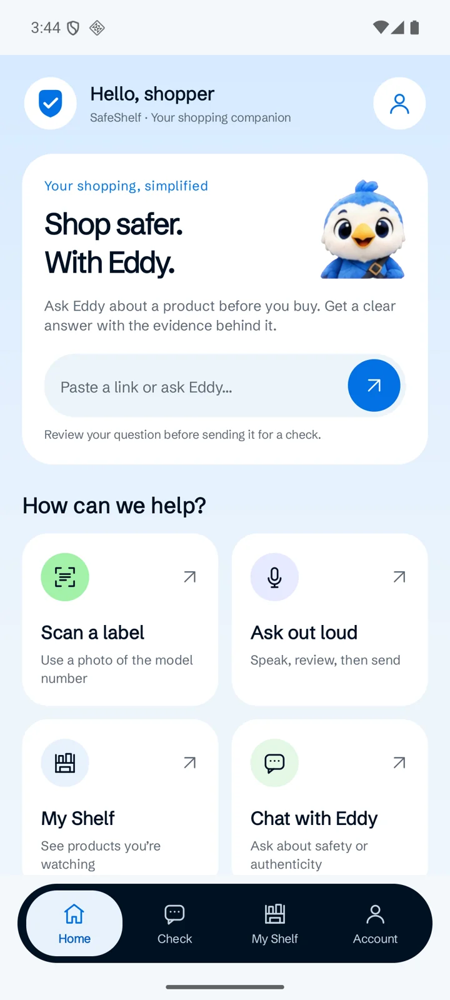

Bring a shopping link
Share from another Android app or paste a link. Review your question before sending.
SafeShelf for Android Test build
Share a shopping link or photograph a product label. Ask Eddy about recalls, safety and authenticity—and see the sources behind the answer.
v0.4.0 · Android 8.0+ · APK · 2.1 MB
Android test build · Not on Google Play yet. Installation guide

01 Bring a link or a label.
02 Ask Eddy. See the sources.
03 Keep products in My Shelf.
Share from another Android app or paste a link. Review your question before sending.
Take a clear photo of the brand and model. Add it to a product check with Eddy.
Save supported products to My Shelf and check their latest in-app recall status.
A little check. More peace of mind.
Explore the four app screens. Choose a tab to see what you can do and how it works.
01 / 04
Paste a shopping link or type a question. Prefer a photo or your voice? The shortcuts are right there. Your question opens in Check for you to review before sending.
Actual app screens · v0.4.0. Live answers depend on the product and available evidence.
From download to your first check
Install the Android test build, open SafeShelf, and bring your first product question.
Get the APKUse the download button on this page. You’ll get SafeShelf-0.4.0-debug.apk. Downloaded on a computer? Transfer the file to your phone.
Open the APK from Downloads or your Files app. If Android asks, allow this browser or Files app to install it, then tap Install.
Open SafeShelf, sign in with email or try guest access, then paste a shopping link or scan a label. Review your question and press Send.
A few things to know
This version is a direct-download Android test build, not a Google Play release. The download on this page is the v0.4.0 APK. A production store release has not been published.
An Android phone running Android 8.0 or newer, an up-to-date Android System WebView, and an internet connection for sign-in and live checks. Camera and voice input are optional; voice input depends on your device’s speech-recognition support.
Yes. Choose Continue as guest in the app’s sign-in card, or use email and password. Your remaining checks are shown in the app. Google sign-in is currently available on the website, not inside the Android app.
Not in this build. Save a supported product using “Watch for recalls”, then open My Shelf to see its latest status. Background push notifications have not been connected.
Links and photos are sent when you request a check. Camera access is optional. Signed-in watchlists use your account; a guest watchlist stays linked to this app’s stored identity. Clearing app data removes access to that guest watchlist. Desktop-extension saves use a separate shelf.
This download is for Android. You can use Eddy in your web browser on other devices. An iOS app is not available.
No. An answer reflects the records and evidence checked, which can be incomplete. Read the sources and uncertainty shown in the result; no matching recall is not a guarantee of safety or authenticity.
Your next shopping companion
SafeShelf for Android. Your links, your questions, the evidence.
Download the Android app v0.4.0 test build · Android 8.0+ · Direct APK download